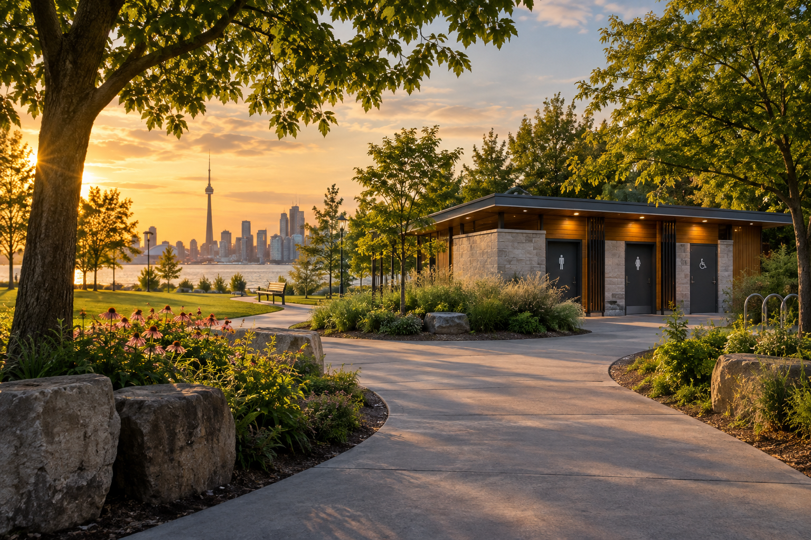

Tell us where
Add your start and destination. Choose how far you’re comfortable going between stops.

Comfort-first routes built around mapped public washrooms — because a little certainty changes everything.
Add your start and destination. Choose how far you’re comfortable going between stops.
Filter for accessible stalls, gender neutral facilities, change tables, or staffed locations.
Follow a route with mapped washrooms placed where you might need them.